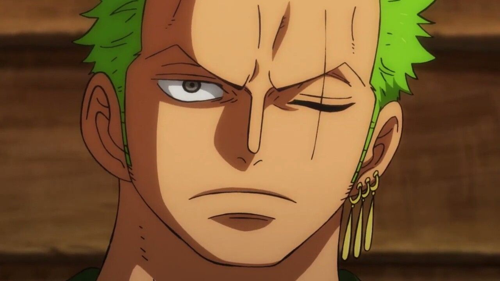
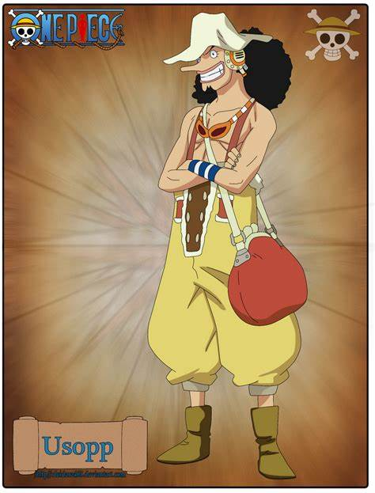
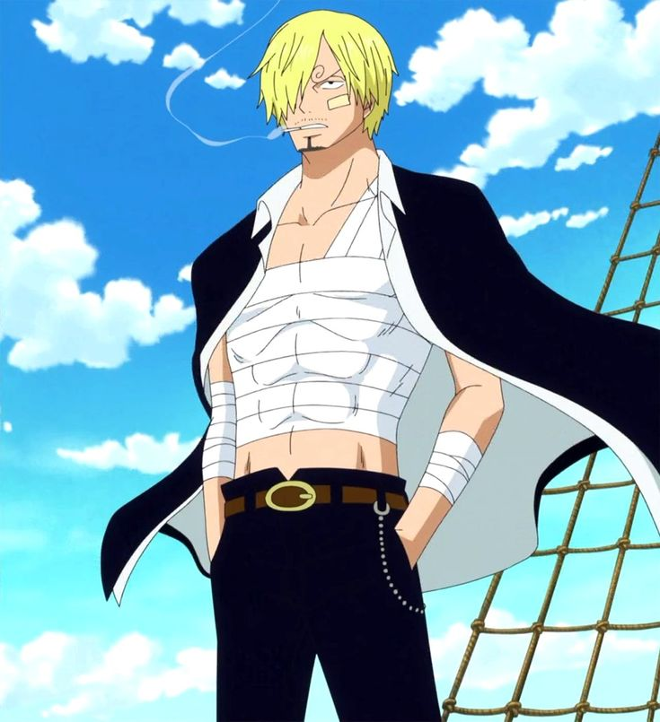

Gol D. Roger,[7][3] more commonly known as Gold Roger,[1] was a legendary pirate who, as captain of the Roger Pirates, held the title of Pirate King and owned the legendary treasure known as One Piece.[1] He was also the lover of Portgas D. Rouge and the biological father of Portgas D. Ace.[8]
Roger was famed as the man who did what no one thought possible — he conquered the Grand Line and amassed a vast fortune. Afterwards, knowing that he would soon die from an incurable disease, Roger disbanded his crew before turning himself in to be executed. The World Government intended to have Roger be publicly executed to discourage piracy, but his last words had the opposite impact. He stated that anyone who can find his treasure can claim it. As such, this made Roger single-handedly responsible for starting the Golden Age of Pirates.[1][9]
Monkey D. Luffy, also known as "Straw Hat Luffy" and commonly as "Straw Hat",[10] is the founder and captain of the increasingly infamous and powerful Straw Hat Pirates, as well as the most powerful of its top fighters.[26][27] He desires to find the legendary treasure left behind by the late Gol D. Roger and thereby become the Pirate King,[28] which would help facilitate an unknown dream of his that he has told only to Shanks, his brothers, and crew.[29][30] He believes that being the Pirate King means having the most freedom in the world.[31]
Born in Foosha Village, Luffy is the son of Monkey D. Dragon, the leader of the Revolutionary Army,[32] and the grandson of the Marine hero Monkey D. Garp,[33] and their family carries the initial and Will of D. At age 7, Luffy accidentally ate the Gomu Gomu no Mi, which turned his body into rubber.[34] Shanks also gave Luffy the very straw hat that has become Luffy's signature accessory, having gifted it to the boy as part of a promise for them to meet again someday after he became a great pirate.[35] Growing up on Dawn Island under the care of Curly Dadan,[36] Luffy befriended and became sworn brothers of the late "Fire Fist" Portgas D. Ace[37] and Revolutionary Chief-of-Staff Sabo.[38]

Roronoa Zoro,[20] also known as "Pirate Hunter" Zoro,[9] is a main combatant of the Straw Hat Pirates, one of their two swordsmen, one of the Senior Officers of the Straw Hat Grand Fleet,[4] and is publicly recognized as the right-hand man of his crew's captain Monkey D. Luffy.[21][22] Formerly a bounty hunter,[6] he is the second member of Luffy's crew and the first to join it, doing so in the Romance Dawn Arc.[2]
Born in the East Blue, Zoro is the son of Tera and Roronoa Arashi, the grandson of Shimotsuki Furiko and Roronoa Pinzoro, and the grandnephew of Shimotsuki Ushimaru, making him a matrilineal descendant of both the Shimotsuki Family of Wano Country and the legendary samurai, Shimotsuki Ryuma.[3][11] As a master of Three Sword Style, a swordsmanship style which he created during his childhood training in Shimotsuki Village, Zoro is one of the three most powerful combatants of the Straw Hats, alongside Luffy and Sanji, who are referred to as the "Monster Trio".[23][24] His dream is to become the greatest swordsman in the world, in order to honor a promise he made to his deceased childhood friend Kuina.[25]

"God" Usopp[9] is the sniper of the Straw Hat Pirates and one of the Senior Officers of the Straw Hat Grand Fleet.[2] He is the fourth member of the crew and the third to join, doing so at the end of the Syrup Village Arc. Although he left the crew during the Water 7 Arc, he rejoined at the end of the Post-Enies Lobby Arc.[16]
Usopp is the son of Yasopp and Banchina. He was born and raised in Syrup Village, serving as "captain" of the Usopp Pirates and being Kaya's close friend. After working with the Straw Hats to defeat Kuro and the Black Cat Pirates, he was invited to join the crew. Despite his usual cowardice, Usopp dreams of becoming a brave warrior of the sea just like his father and lives every day in pursuit of living up to this dream.
He first gained a bounty of Beli30,000,000 under his Sogeking Persona after the incident at Enies Lobby. After the Dressrosa Arc, Usopp gained a bounty of Beli200,000,000 under his own name. Following the Raid on Onigashima, his bounty was increased to Beli500,000,000.[2]

"Black Leg" Sanji,[12] born as Vinsmoke Sanji,[21][22][23] is the cook of the Straw Hat Pirates and one of the Senior Officers of the Straw Hat Grand Fleet.[5] He is the fifth member of the crew and the fourth to join, doing so at the end of the Baratie Arc.
Born as the third son and fourth child of the Vinsmoke Family[24] (thus, making him a former prince of the Germa Kingdom), he disowned his family twice, once in his youth and again after reuniting with them as an adult.[25] After fleeing the Vinsmokes as a child, he eventually entered the care of Zeff as the sous chef of the Baratie, where he would remain until he met Monkey D. Luffy, who convinced him to join his crew.
His dream is to find the rumored chef's paradise, All Blue, which is where the East Blue, West Blue, North Blue, and South Blue meet, along with their wildlife. He is one of the top three fighters of the Straw Hats, alongside Luffy and Zoro, who are referred to as the "Monster Trio".[26][27]
He first gained a bounty of Beli77,000,000 for his role in the raid on Enies Lobby. It increased to Beli177,000,000 after the Dressrosa Arc, but the condition of his bounty was changed to Only Alive due to his biological father's interference. After he escaped from Big Mom's territory, his bounty condition was reverted back to Dead or Alive, and its value increased to Beli330,000,000.[19] Following the Raid on Onigashima, his bounty was increased to Beli1,032,000,000.[5] Despite renouncing his surname Vinsmoke,[22] the World Government labels it as part of his name on his wanted poster.[23]
Edward Newgate,[12] more commonly known as "Whitebeard", was the captain of the Whitebeard Pirates and was widely known as the "Strongest Man in the World" and, after Gol D. Roger's death, the "Man Closest to One Piece".[7]
Before forming his own crew, Newgate was an orphan hailing from the island of Sphinx. During his tenure as a pirate, he was a known member of the legendary Rocks Pirates and later in life became part of the Four Emperors that rule over the New World,[4][5] before his death in the Summit War of Marineford.[13]
In his prime, Newgate was a rival to Gol D. Roger, and following Roger's death, was widely recognized as the strongest man in the world, a fact complimented by having the highest active bounty whilst alive, and the second highest bounty of any pirate in history.
He was an ally of Monkey D. Luffy and a central figure overall during the Marineford Arc.